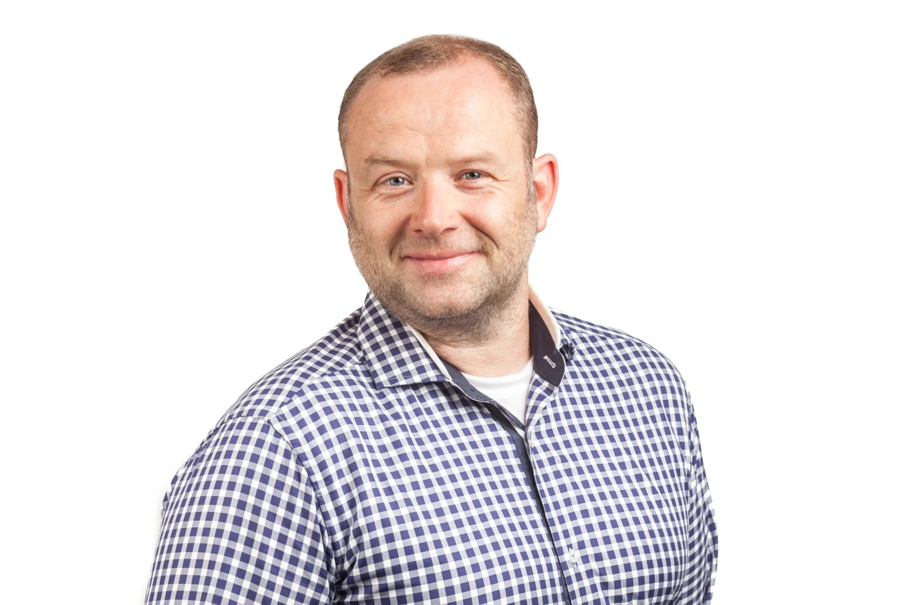

Okt - nov 2026
Planner Service
B&G Hekwerk · Veldhoven
- Serviceplanning rond storingen aan hekwerken en poorten.
- Afstemming met klanten en monteurs over storingen en de inzet in Noord-Nederland.
Senior planner & procesverbeteraar
Met ruim dertig jaar ervaring in productie, techniek, zorg en opleiden verbind ik mensen, middelen en deadlines in een planning die in de praktijk klopt.

Ervaren planner met een brede achtergrond in productie-, capaciteits-, personeels- en projectplanning. Ik kijk vooruit, breng structuur aan en verbind mensen, middelen en deadlines in een haalbare planning. Klantcontact en de samenwerking met uitvoerende collega’s geven mij energie.
Van recente rollen terug door de tijd
B&G Hekwerk · Veldhoven
TÜV NORD Nederland
TRUMPF EUV · ASML-locatie
Diagnostiek voor U
Four Seasons Food
Daarvoor werkte ik als trainer, docent en mentor bij SVO Vakopleiding Food, als planner bij Vion, als assistent productieleider bij Bakx Foods en bij D.M.V. International. Die combinatie van plannen, leidinggeven en mensen begeleiden vormt nog steeds de basis van mijn aanpak.
BVE-lesbevoegdheid via Fontys, M.A.S. Levensmiddelentechnologie en Lean Orange Belt.
Excel en VBA, Microsoft 365, Navision, REFLEXsystems, Ayton Aysist, Helpline Careware, Prins en Chipsoft EZIS/HIX.
Nederlands als moedertaal, goed Engels en basis spreek- en luistervaardigheid in het Duits.
Download de actuele openbare versie van mijn cv. Privéadres, telefoonnummer en geboortedatum zijn hierin bewust weggelaten.